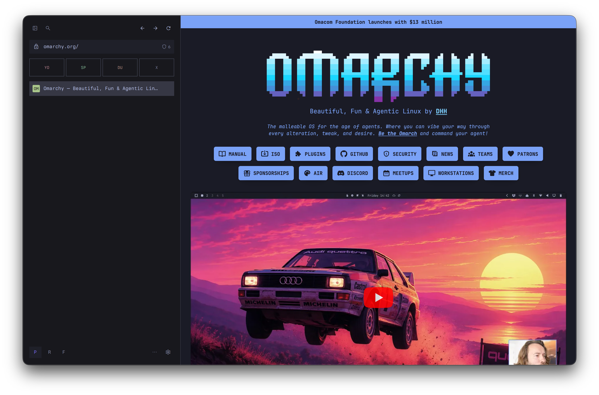

Keyboard-driven browser
The browser should be part of your desktop, not a guest on it.
Tanto takes its palette from your terminal, its geometry from your window manager, and its commands from your keyboard. One ordinary window, tabs down the side, and browsing identities that never see each other.

2 keys
Nothing needs the mouse
Addresses, tabs, Spaces and every browser command live behind one overlay — ⌘K. Links get letter hints with f. Scrolling is j and k, because of course it is.
Your bindings, not ours
Every keystroke is a line in one JSON file you own. Rebind anything, hand a conflicting key back to the page, and read the live sheet whenever you forget one.
Themed from your terminal
Point Tanto at a terminal colour scheme and the whole browser follows — chrome, Start page, and the inspector docked beside your tab.
3 spaces
One browser, several people
A Space owns its logins, cookies, history, permissions, sessions and tabs. Switch away and the first Space is simply not there — no profile juggling, no second browser, no signing out of your own work to check a client's dashboard.
Pinned tabs that stay put
Pin the handful of pages a Space is actually about and they come back every time it resumes. Mark one Keep active and it keeps running while you are elsewhere — and Tanto always tells you which tab that is and what it is costing you.
4 state
What works today
Spaces, Pinned tabs, the Omnibar, keyboard navigation, docked developer tools, content blocking, session restore, downloads, history and site permissions — on macOS, in one frameless window.
What is not finished
Certificate handling, sandbox health reporting, URL reputation, updates and signed packages. Tanto is pre-alpha and says so. Do not put anything sensitive through it yet.
Where it is going
The same browser contract on Linux and Wayland, sitting in a tiling window manager as a first-class citizen rather than a 200MB tenant.